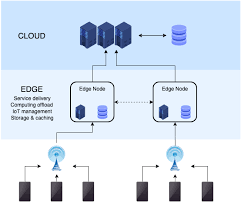

Multiexperience Development Platforms
MXDPs serve to centralize life cycle activities — designing, developing, testing, distributing, managing and analyzing — for a portfolio of multiexperience apps. Multiexperience refers to the various permutations of modalities (e.g., touch, voice and gesture), devices and apps that users interact with on their digital journey across the various touchpoints. Multiexperience development involves creating fit-for-purpose apps based on touchpoint-specific modalities, while at the same time ensuring a consistent user experience across web, mobile, wearable, conversational and immersive touchpoints.
Multiexperience link
Cloud Distribution
Cloud computing is the on-demand availability of computer system resources, especially data storage and computing power, without direct active management by the user. The term is generally used to describe data centers available to many users over the Internet. Large clouds, predominant today, often have functions distributed over multiple locations from central servers. If the connection to the user is relatively close, it may be designated an edge server.

Cloud Distribution
 Hyperautomation Link
Hyperautomation Link